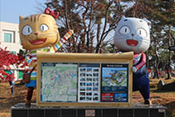
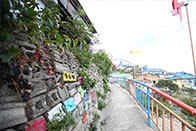
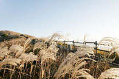

-
 그 겨울, 동심이 분다.춘천 애니메이션박물관
어린 시절 TV 속 만화에 빠져본 적 있지 않나요? 우리나라에서 유일한 애니메이션박물관, 춘천 애니메이션박물관에서는 애니메이션의 역사, 기원, 그리고 세계 애니메이션에 대해 전시하고 소개하고 있습니다. 동심이 부는 이번 겨울, 아이들과 함께 애니메이션의 세계로 여행을 떠나볼까요?
-
꽁꽁 언 겨울을 녹여줄 재미!화천 산천어축제
추위를 즐기는 자가 이긴다! 세계 4대 겨울축제로 유명한 화천 산천어축제가 성큼 다가왔습니다. ‘얼지 않은 인정, 녹지 않은 추억’이라는 주제를 가지고 2017년을 맞이하면서 열리는 2017 화천 산천어축제입니다.
-
 그림 한 폭에 이야기를 담다.동해 논골담길
한 해의 끄트머리이자 시작, 겨울이 돌아왔습니다. 화려함보다는 소박하고 정겨움을 찾아 떠나는 여행 어떠실까요? 벽화마을로 많이 알려진 동해 논골담길로 발을 떼봅니다. 논골담길은 묵호의 이야기를 바탕으로 소박한 담화가 그려져 있는 골목이라는 뜻으로, 이름 그대로 논골담길을 걷다 보면 묵호의 삶이 고스란히 담겨있는 모습을 벽화로 만나볼 수 있습니다.
-
옛날 모습 그대로 만나보는횡성 풍수원성당과 유물전시관
한국인 신부가 지은 최초의 성당 풍수원성당에 대해 들어보셨나요? 풍수원성당은 신자들이 직접 나무를 패고 벽돌로 만들어낸, 한국에서 4번째로 지어진 성당으로 고즈넉한 분위기가 마음의 평온함을 주는 곳입니다. 가을날 도시를 떠나, 자연과 어우러져 여유를 느껴볼 수 있는 풍수원성당으로 걸어 들어가 봅니다.
-
 가을향기를 진하게 느껴보는정선 민둥산 억새꽃축제
친절, 세력, 활력이라는 꽃말을 가진 억새는 요즘과 같은 가을에 볼 수 있는 꽃으로, 매년 이맘때쯤 정선 민둥산 정상에서는 억새꽃축제가 한창입니다. 가을을 대표하는 낭만적인 축제, 2016 정선 민둥산 억새꽃축제를 만나러 발걸음을 옮겨봅니다.
-
화백의 삶을 담은양구 박수근미술관
2007년 3월 국내 미술품 경매 사상 45억 2,000만원이라는 최고가를 경신하며 낙찰된 그림 한 점을 아시나요? 바로 박수근 화백의 작품 <빨래터>입니다. 한국 미술계를 뒤흔든 가장 한국적이고 서민적인 화가로 알려진 박수근 화백. 그가 처음으로 ‘그림’에 발을 들여놓게 된 박수근미술관을 걸어봅니다.